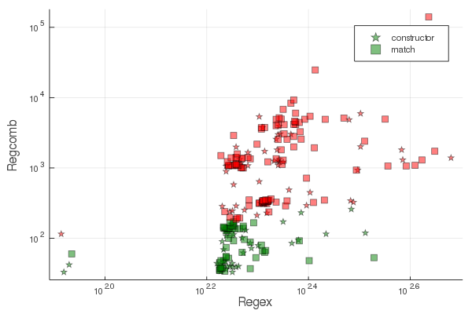
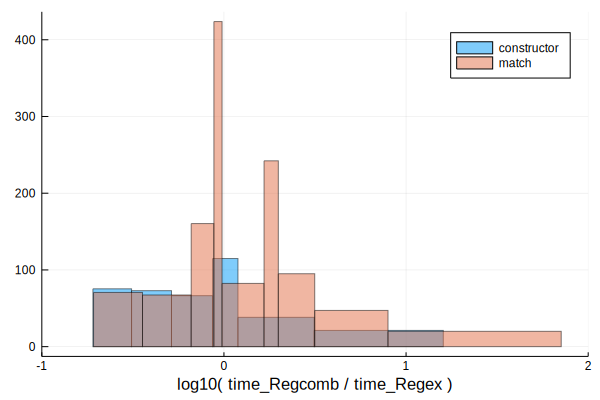

Compliance with the PCRE test set
PCRE features supported by @re_str
- ✓ sequences, alternations (
|), repetitions (*,+,{n},{min,},{min,max}), optional matches (?) - ✓ escaped characters and generic character types
- ✓ character ranges (
[]) - ✓ non-capturing groups
- ✓ capturing groups, backreferences, subroutines (all by index, relative index and name)
- ✓ simple assertions (
\A,\z,\Z,\b,\B,^,$) - ✓ lookaheads and lookbehinds
- ✓ atomic groups
- ✓ lazy repetitions
- ✓ conditional expressions
- ✓ internal and pattern options setting
- ✓ comments
PCRE functionality that is currently not supported:
- ✕ capture groups in lookbehinds.
- ✕ ACCEPT, SKIP, COMMIT, THEN, PRUNE, \K
CombinedParsers.jl is tested and benchmarked against the PCRE C library testset. The PCRE test output is downloaded from the PCRE source repository, parsed with a CombinedParser, to run tests benchmarks on Base.Regex and CombinedParsers.Regexp.Regcomb.
Test Overview
3025 successful tests on 961 patterns (See list of compliant patterns).
41 failed tests on 27 patterns (See list of failed patterns).
Performance Overview:
CombinedParsers is a very young package that will be optimized further, but already @re_str pure Julia regular expression parsing is competitive with @r_str with the PCRE C backend which has arrived at a widely optimized codebase after decades of improvements.
Benchmark timings for regular expression construction and matching comparing Regex (x axis) and Regcomb (y axis), both on a log10 scale:

Points represent PCRE an individual benchmark. PCRE benchmarks have a range between 82ns to 518ns. CombinedParsers benchmarks have a ~20-times larger range between 33ns to 140μs.
Benchmark ratios histogram:

The equal are histograms of log10-ratios of time_Regcomb/time_Regex shows that CombinedParser implementation is competitive, with speeds up to 10x faster in best cases and only rarely 100x slower in worst cases. Worst cases are investigated for improving in this IJulia notebook.
Unsupported
251 unsupported patterns were omitted for the following reasons:
ACCEPTfailed on 16 patterns.COMMITfailed on 35 patterns.PRUNEfailed on 18 patterns.SKIPfailed on 29 patterns.THENfailed on 50 patterns.\Kfailed on 13 patterns.checking for pattern recursionfailed on 5 patterns.options aftertextfailed on 12 patterns.options gfailed on 5 patterns.options g,aftertextfailed on 7 patterns.options g,dupnamesfailed on 5 patterns.options gmfailed on 2 patterns.options imsx,markfailed on 2 patterns.options markfailed on 38 patterns.options mark,no_start_optimizefailed on 1 patterns.options x,markfailed on 13 patterns.